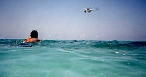
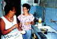
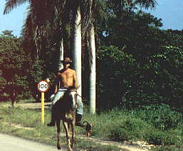

A
|
|
Information about
The Photo Tour of CubaThis website began as a small part of "The Jews of Cuba," but grew as new works were added. The intent is to showcase the work of professional photographers and regular tourists who have been to Cuba. I would like people who have never been to Cuba, and the members of the Cuban exile community who have not been able to return, to see the people of Cuba as they live, and where they live, and also show the magnificent physical landscape of Cuba.
|
metayel@home.com |
|
I'm looking for the following:
- Good photos of Cuba showing the people going about their daily lives;
- Good landscapes which have no tourists standing in the foreground;
- Unique interpretations of Cuban culture;
- Places not normally visited by tourists;
- Portrayals of Cuban art and artists.
 I am not looking for:
- Propaganda photos or websites, including any photo or website idolizing Che Guevera. A few photos of Guevera sneak into almost any scene in Cuba, but I've tried to keep this to a minimum.
 Before submitting your own photos or those of someone else, you might want to review the variety of photos already on the site, both to avoid duplication and to see if the pictures you propose adding are of equal quality. All photos on the page you are reading are my own. There are many better photographers represented on this site.
 Technical and other stuff:
- a photo can be of lesser quality (such as those produced by digital cameras) if the topic is unique;
- submitted photos should be under 80 kilobytes;
- no gifs or interlaced jpgs, please;
- mailed photos should be accompanied by a return mailing label.
All photos remain the property of the respective photographers. Any use of these photos for commerical purposes without permission is a violation of the law in most countries.
Please respect the rights of the individual photographers.
In putting together this website I have tried to avoid the emotional polarization that takes place in discussions of Cuba. However, I would not be honest if I did not make known my personal belief that a dictatorship of four decades cannot in any terms be described as "freedom."
Thanks for visiting.Richard Smith
Richmond, Virginia, USA
Back to the Photo Tour